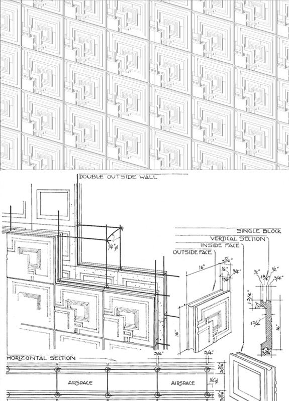

Frank Lloyd Wright was an American architect,writer and educator. Wright believed in designing structures that were in harmony with humanity and its environment, a philosophy he called organic architecture. This philosophy was best exemplified by Fallingwater, which has been called "the best all-time work of American architecture".

The Solomon R. Guggenheim Museum is an art museum located at 1071 Fifth Avenue on the corner of East 89th Street in New York City. It is the permanent home of a continuously expanding collection of Impressionist and contemporary art and also features special exhibitions throughout the year. Frank Lloyd Wright is the architet of this magnificent building.

Frank Llyod Wright invented a kind of modular system that can use single modular pannel to create a whole design by layout them. This system is a forerunner of modern digital fabrication. Frank Llyod Wright not only design the pattern and detail of the single modular pannel but also create a kind of device to produce the pannel in high productivity.
"No stream rises higher than its source. What ever man might build could never express or reflect more than he was. He could record neither more nor less than he had learned of life when the buildings were built. Lack of culture means what it has always meant: ignoble civilization and therefore imminent downfall.Organic buildings are the strength and lightness of the spiders' spinning, buildings qualified by light, bred by native character to environment, married to the ground."
“We are all here to develop a life more beautiful, more concordant, more fully expressive of our own sense of pride and joy than ever before in the world.”
-– FRANK LLOYD WRIGHT, 1957